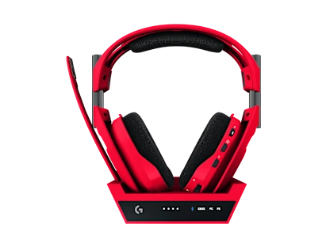

TOP VENTAS
ASTRO A50 X LIGHTSPEED
Audífonos inalámbricos con diseño cómodo y sonido envolvente. Producto ficticio para prácticas.
$79 $99
Información técnica
Especificaciones
| Característica | Detalle |
|---|---|
| Drivers | PRO-G GRAPHENE de 40 mm |
| Respuesta de Frecuencia | 20 Hz – 20,000 Hz |
| Autonomía | Hasta 24 horas |
| Compatibilidad de Audio 3D | Dolby Atmos (Xbox/PC) y PlayStation 3D Audio |